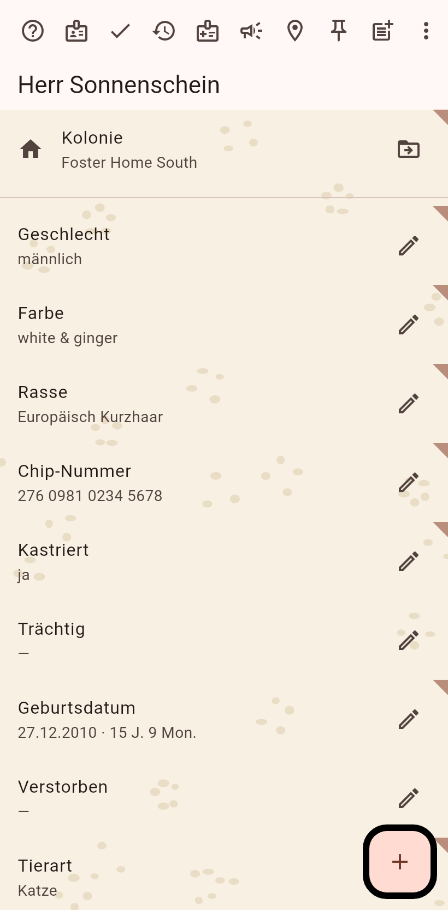
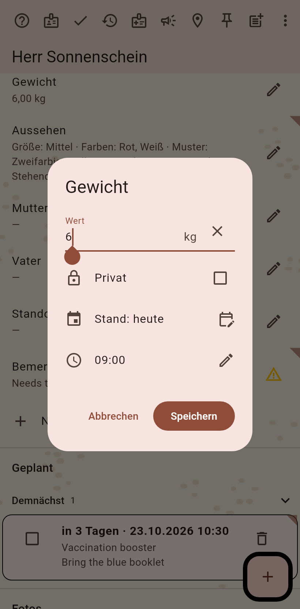
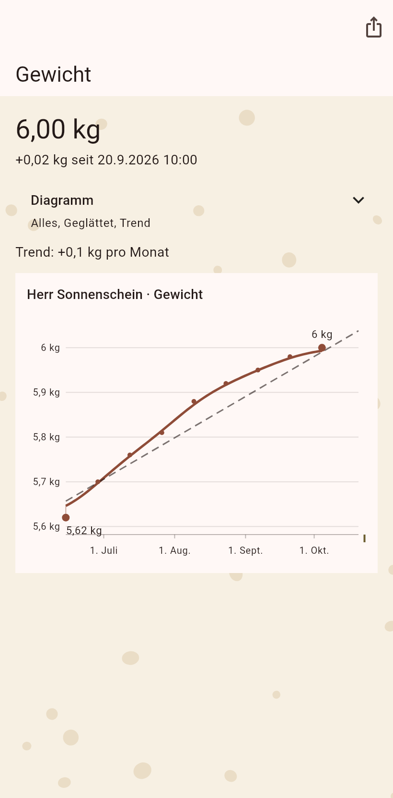

1. Die Katzenseite
Die Katze im Lesemodus. Das Gewicht steht unter den Feldern mit seinem letzten Wert und einem kleinen Verlauf darunter.

2. Bearbeiten einschalten
Der Stift in der Leiste schaltet das Bearbeiten ein; jedes Feld bekommt einen eigenen Stift.

3. Das Gewicht eintragen
Der Editor nimmt die Zahl in der Einheit, die dein Gerät bevorzugt, das Datum, ab dem sie zählt, und die Privat-Markierung. Speichern.

4. Das Diagramm
Die Uhr am Feld öffnet seinen Verlauf; der Verlauf einer Zahl ist ein Diagramm: die gemessenen Punkte, die geglättete Linie, der Trend, über den Bereich, den du wählst.
